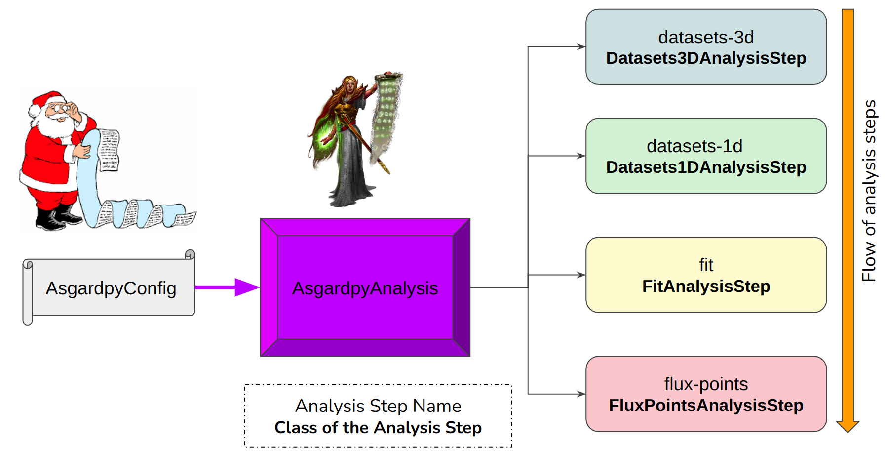

asgardpy pipeline#
Gammapy-based pipeline to support high-level analysis for multi-instruments joint datasets. Follow the Gammapy v1.0 documentation for understanding the core Gammapy objects.
The various Data Levels used here follow the descriptions suggested by GADF v0.3 and CTAO Data Model.
Main structure#
The package is structured in 2 ways -
Creating the AnalysisConfig based on several Config components - asgardpy.config module
Generating AsgardpyAnalysis based on several Analysis Step components - asgardpy.analysis module
Analysis Steps#
The configuration-based pipeline separates the Gammapy-based High-Level Analysis into serialized intermediate steps. Check asgardpy.base.base module for more details. The steps are:
datasets-3d
asgardpy.data.dataset_3d.Datasets3DAnalysisStepdatasets-1d:class:asgardpy.data.dataset_1d.Datasets1DAnalysisStep
flux-points
asgardpy.data.dl4.FluxPointsAnalysisStep
The main purpose of this pipeline is accomplished before the “fit” step, which is to compile a Gammapy Datasets object containing multiple types of datasets from multiple gamma-ray astronomical instruments, update them with appropriate Gammapy Models object. These are then run with the standard Gammapy high-level analysis functions to get the DL5 products.
{kind=link}
DL3 Data component#
The “DL3 level” data files for any instrument is read by providing the path location and a search glob pattern in the Config file. These are read
by the asgardpy.io.io.DL3Files.
The main modules dealing with the 2 types of data being read are -
3D Dataset asgardpy.data.dataset_3d module
1D Dataset asgardpy.data.dataset_1d module
They each build their Config components using classes defined with,
a base in
asgardpy.base.base,from distinct modules -
Base Geometry asgardpy.base.geom module
Dataset Reduction asgardpy.base.reduction module
and from their own respective modules
The processing of Dataset creation is performed by asgardpy.data.dataset_3d.Dataset3DGeneration and asgardpy.data.dataset_1d.Dataset1DGeneration
Models#
The asgardpy.data.target module: Classes contains various classes for various Models objects and asgardpy.data.target module: Functions contains various functions for handling them.
High-level Analysis#
The various Config components and Analysis steps for the high-level analysis can be found in asgardpy.data.dl4 module.
Getting started#
Contents#
- asgardpy.analysis module
- asgardpy.base.base module
- asgardpy.base.geom module
- asgardpy.base.reduction module
- asgardpy.config module
- Template AsgardpyConfig
- Template models file
- asgardpy.data.dataset_3d module
- asgardpy.data.dataset_1d module
- asgardpy.data.target module: Classes
- asgardpy.data.target module: Functions
- Spectral model parameter renaming to Gammapy default
- asgardpy.data.dl4 module
- asgardpy.io module
Team#
asgardpy is developed and maintained by Chaitanya Priyadarshi. To learn more about who specifically contributed to this codebase, see our contributors page.
License#
asgardpy is licensed under Apache 2.0. A full copy of the license can be found on GitHub.